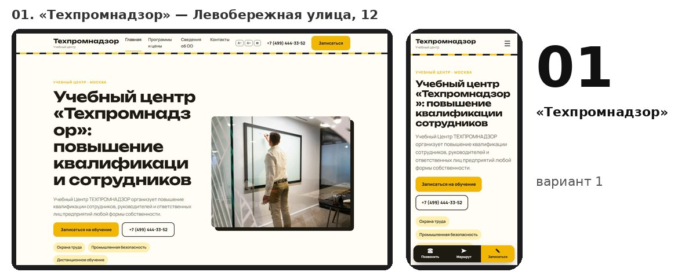
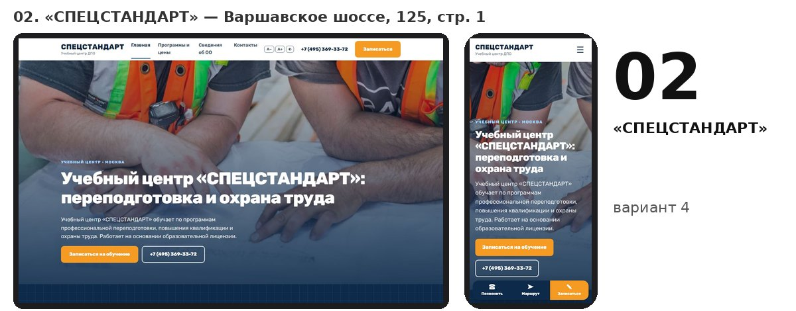
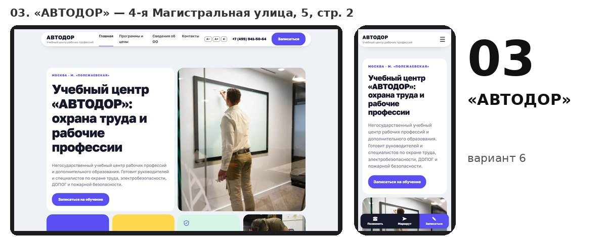
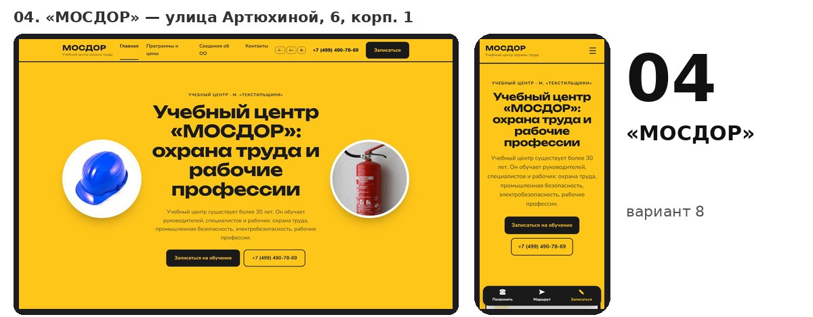
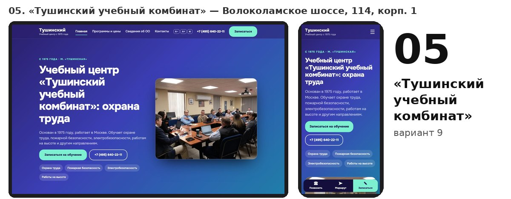
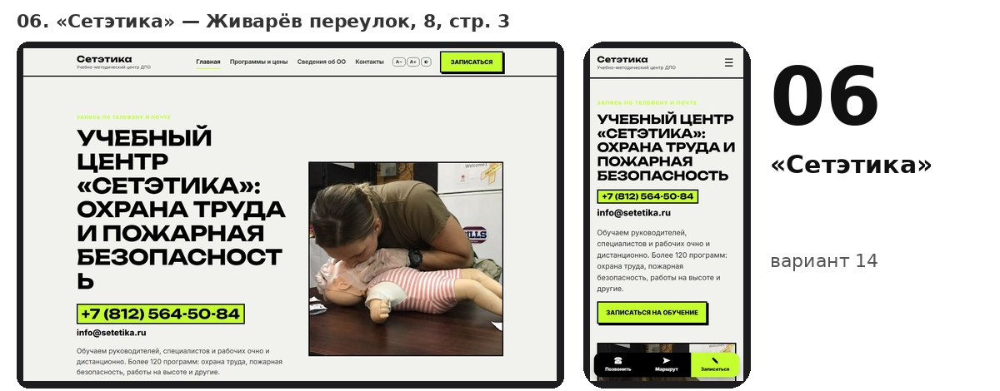
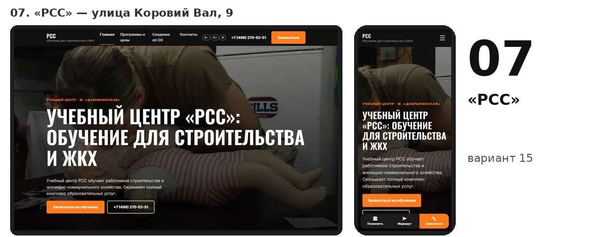
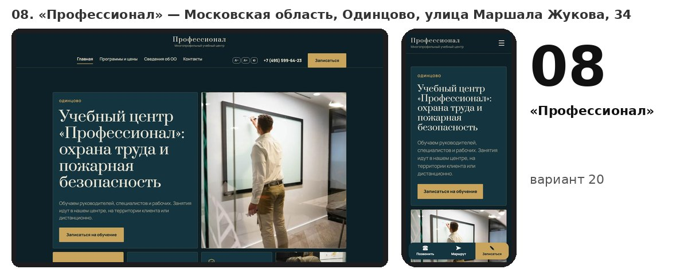
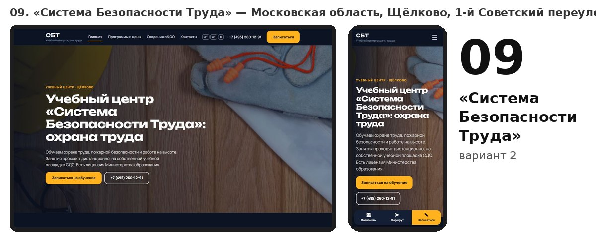

9 центров, Москва, Одинцово, Щёлково. Все ночи

01. «Техпромнадзор»Левобережная улица, 12 · вариант 1Главная · Программы и цены · Сведения · Контакты
02. «СПЕЦСТАНДАРТ»Варшавское шоссе, 125, стр. 1 · вариант 4Главная · Программы и цены · Сведения · Контакты
03. «АВТОДОР»4-я Магистральная улица, 5, стр. 2 · вариант 6Главная · Программы и цены · Сведения · Контакты
04. «МОСДОР»улица Артюхиной, 6, корп. 1 · вариант 8Главная · Программы и цены · Сведения · Контакты
05. «Тушинский учебный комбинат»Волоколамское шоссе, 114, корп. 1 · вариант 9Главная · Программы и цены · Сведения · Контакты
06. «Сетэтика»Живарёв переулок, 8, стр. 3 · вариант 14Главная · Программы и цены · Сведения · Контакты
07. «РСС»улица Коровий Вал, 9 · вариант 15Главная · Программы и цены · Сведения · Контакты
08. «Профессионал»Московская область, Одинцово, улица Маршала Жукова, 34 · вариант 20Главная · Программы и цены · Сведения · Контакты
09. «Система Безопасности Труда»Московская область, Щёлково, 1-й Советский переулок, 25 · вариант 2Главная · Программы и цены · Сведения · Контакты